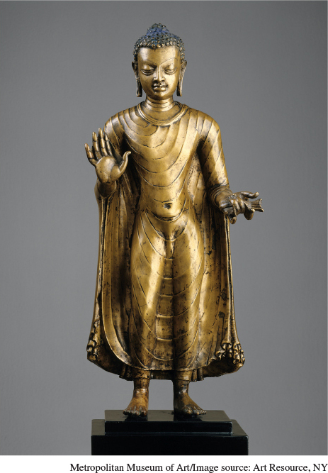

Classic Indian BuddhaThis sixth-century C.E. image of the Buddha from eastern India shows a classical representation of the great teacher. The Buddha’s right hand with palm facing the viewer indicates reassurance, or “have no fear.” The partially webbed fingers are among the lakshanas, or signs of a Buddha image, that denote the Buddha’s unique status. So too is the knot on the top of his head, symbolizing enlightenment. The elongated earlobes remind the viewer that earlier in his life the Buddha wore heavy and luxurious earrings, while his partially closed and downcast eyes and his bare feet indicate detachment from the world.(Standing Buddha, India [probably Bihar]. Gupta period. Late 6th–early 7th century. Bronze. H. 18½ x 61/8 in. [47.0 × 15.6 cm.]. Hands: Diam. 55/8 in. [14.3 cm.]. Purchase, Florance Waterbury Bequest, 1969 [69.222]. Photo: Bruce White. The Metropolitan Museum of Art, New York, NY, USA/Image copyright © Metropolitan Museum of Art/Image source: Art Resource, NY)